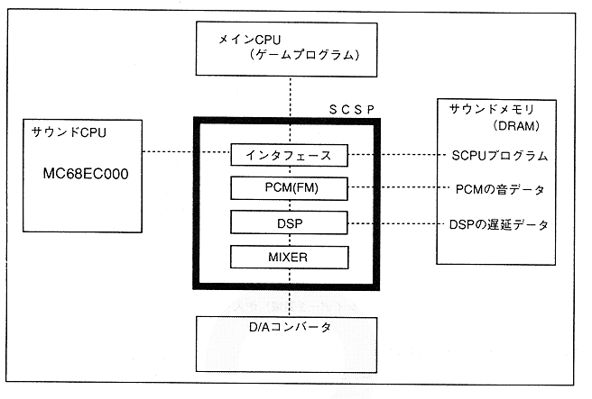

Return to previous page ｜ Return to menu ｜ Go to next page
- Figure 1.2 Sound system configuration

-
■ Relationship with main CPU
- SCSP has a main CPU interface so that the sound system can communicate with the main system (including the main CPU).
As shown in Figure 1.2, the main system can access the memory and register area managed by SCSP through the main CPU interface.
-
■ Relationship with Sound CPU
- SCSP is equipped with a dedicated CPU interface for sound processing (for MC68EC000) so that the sound system can operate independently of the main system. From the viewpoint of SCSP, the sound CPU is equivalent to the controller.
-
■ Sound Memory Map
- Saturn has 4Mbit sound memory.
The sound memory can be accessed from the sound CPU, SCSP, and main CPU (SH-2, SCU). Similarly, the SCSP control registers that control the sound source and DSP sections of sound generation and processing can also be accessed.
Figure 1.3 shows the memory map of the sound memory register. Note that the memory map is referenced from the sound block side, so when accessing from the main, the address is different (refer to the SCU User's Manual for details).
Return to previous page ｜ Return to menu ｜ Go to next page